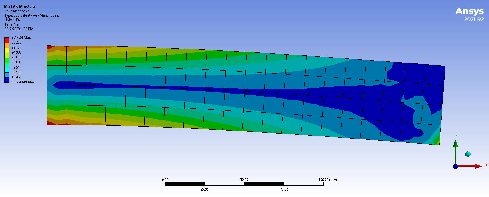
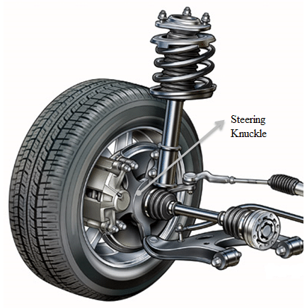
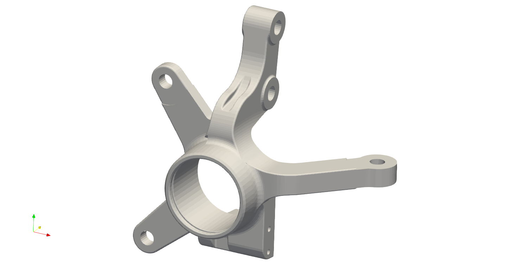
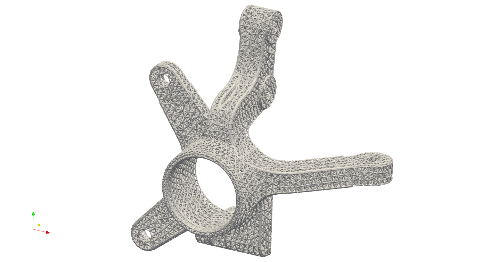
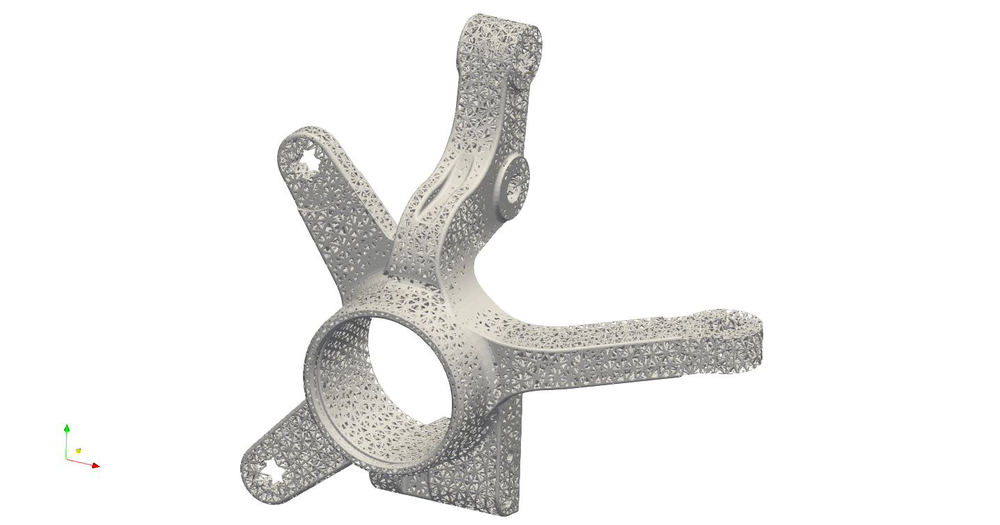
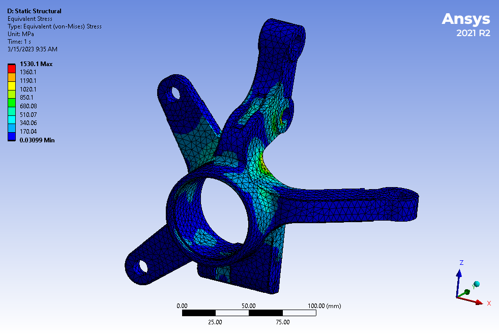
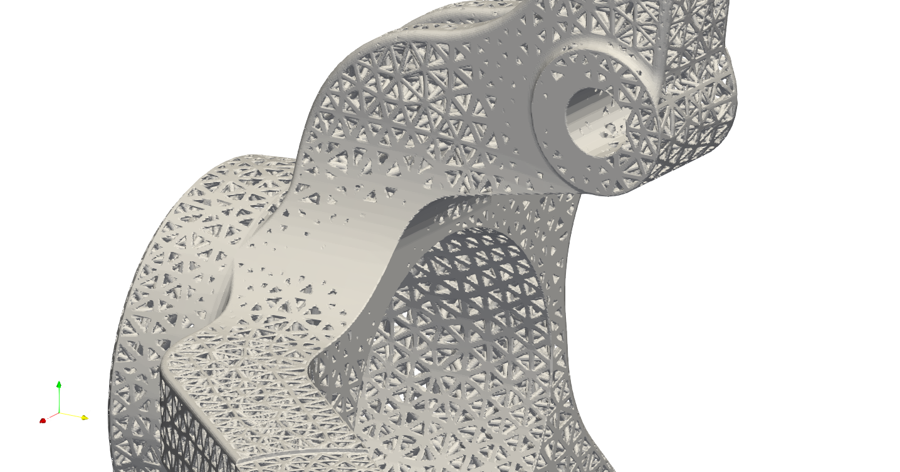
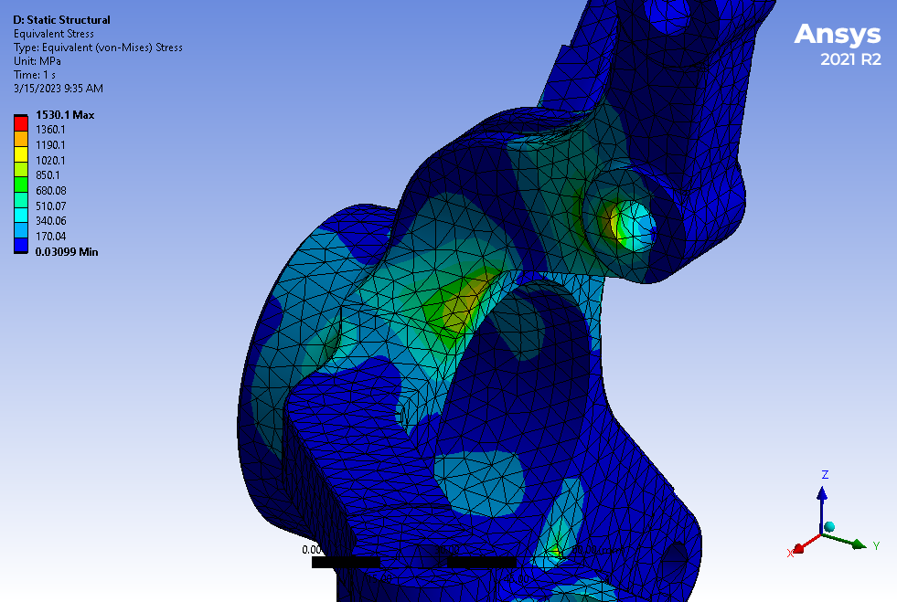
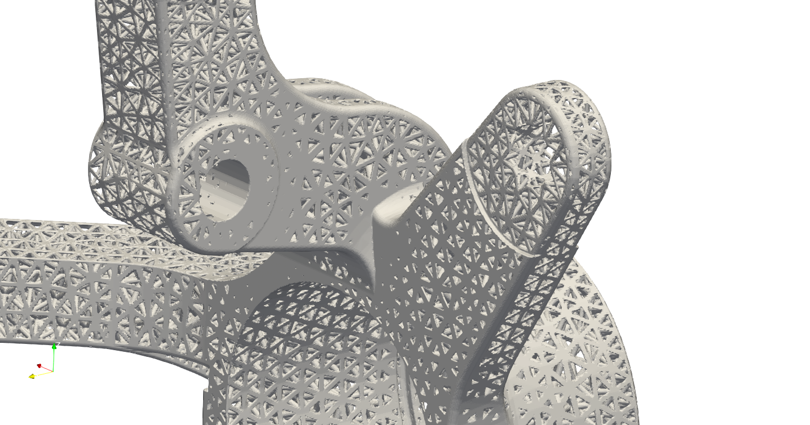
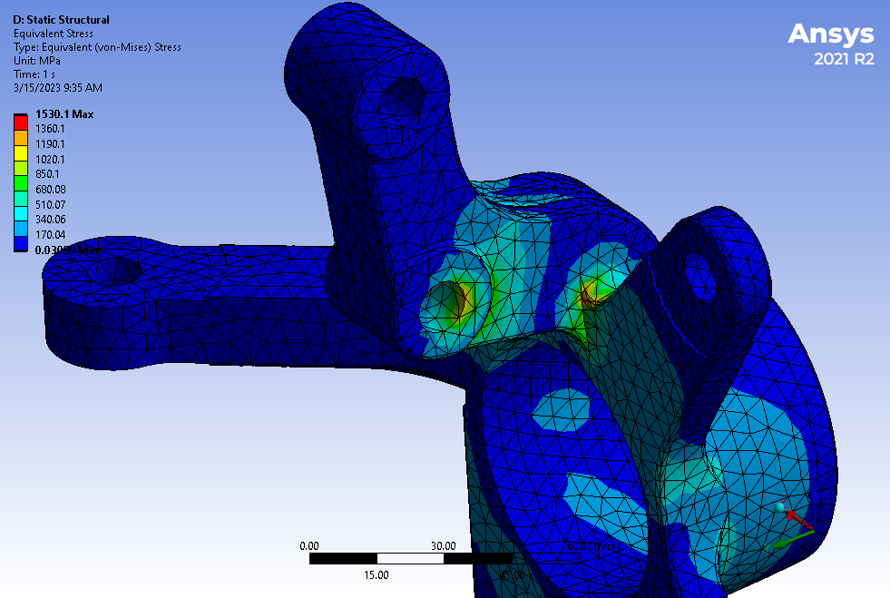

Field Operation
Field Operation#
Often the engineer/designer would like to design a component that accommodates engineering analysis results, such as finite element stress analysis etc., or try to introduce a thicker material layer at the areas suffered higher system loads. In Artisan, these regionally specified design change is considered as a spatially varying field that is added to the existing design field, or being an input variable affecting the local lattice design.
Artisan can read external field (i.e. a data cloud in 3D spatial space) as input and perform high nonlinear interpolation on the field, and use the field to modify local material thickness. Here we use a bending steel bar as an example to demonstrate how to incorporate with external field data, for instance, in this case, a von Mises stress results generated from Ansys mechanical software. Assuming one side of long steel bar is fixed, the force is applied downward on the bottom edge of the other side. The deformation and stress distribution is shown as below.
As shown here, the left hand side surface was fully fixed, and the force applied on the right hand side edge. Therefore the higher stress was observed around the fixation, and gradually reduced towards the right hand side. The stress field can be exported as data cloud, including nodal coordinate with X, Y and Z, and the nodal corresponding von Mises stress values. In practice, Artisan reads the csv file that looks like below. CSV files are text files with information separated by commas, saved with the extension .csv. The file has to be separated by commas and Artisan will skip the first row and first colum, but read the data from second row and second colum.
In order to incorporate with above data, we could define a lattice fill with field strength on the local material thickness as the JSON below.
{"Setup":{ "Type" : "Geometry",
"Geomfile": ".//sample-obj//Bar//Bar.stl",
"Rot" : [0.0,0.0,0.0],
"res":[0.25,0.25,0.25],
"Padding": 1,
"onGPU": false,
"memorylimit": 16106127360
},
"WorkFlow":{
"1": {"Add_Lattice":{
"la_name": "BCCubic", "size": [10.0,10.0,10.0], "thk":0.5,
"Inv": false, "Fill": true, "Cube_Request": {}
}
},
"2":{"OP_OffsetField":{"Max_Offset":1.5,"Min_Offset":0.001,
"FieldFile":".//sample-obj//Bar//fielddata.csv", "Fill": true}},
"3":{"Export": {"outfile": ".//Test_results/Bar_FieldScale.stl"}}
},
"PostProcess":{"CombineMeshes": true,
"RemovePartitionMeshFile": false,
"RemoveIsolatedParts": false,
"ExportLazPts": false}
}
The item 2 in the WorkFlow shows a new keywords OP_OffsetField. It takes the maximum and minimum values in the field data and perform linear interpolation local material thickness offset corresponding to the field value data. In this case, for example, the maximum offset 1.5 mm (i.e. the keywords Max_Offset defined) will be added to the region where has the maximum stress data, whereas the minimum field value (i.e. the keywords Min_Offset defined) 0.001 mm is applied to the spot with lowest stress value. The offset value which the field values lies between max and min will be interpolated using the Min_Offset and Max_Offset. the results are as shown below. User can find this example Bar_FieldOffset.txt at the Test_json folder.
The top and lower lattices where close to the fixation side were thickened in corresponding to the field values.
The field offset operation certainly can apply to other lattice, such as conformal or mesh lattices. Here we use the steering knuckle as example to demonstrate a simple design work flow to reduce the weight and reinforce the local lattice structure. Please note that, this example is only for demonstrating the application of software functionalities, and has no implication on any products.
Steering knuckle is a piece of cast iron made component that ideally should be lightweight in order to improve vehicle’s efficiency and handling. Below is comparison between the original component design and mesh lattice filled geometry.
 The steering knuckle has to be verified by a series load cases in order to meet the structural integrity criterion. The stress distribution is therefore generated by applying the boundary conditions which reflects the loads in these scenarios. This stress filed was then exported as a csv file, and later imported as inputs for the design calculation. User may find the full JSON in the file SteeringKnuckle_Mesh_Infill_LR.txt.
{"Setup":{ "Type" : "Geometry",
"Geomfile": ".//sample-obj//SteeringKnuckle//SteeringKnuckle.stl",
"Rot" : [0.0,0.0,0.0],
"res":[0.3,0.3,0.3],
"Padding": 2,
"onGPU": false,
"memorylimit": 1610612736000000
},
"WorkFlow":{
"1": {"Add_Lattice":{
"la_name": ".//Test_json//SteeringKnuckle//SteeringKnuckle_Mesh_Infill_LR.mld",
"size": [8.0,8.0,8.0], "thk":0.5, "Inv": false, "Fill": false,
"Cube_Request": {}
}
},
"2":{"OP_OffsetField":{"Max_Offset":2.5,"Min_Offset":-0.1,
"FieldFile":".//sample-obj//SteeringKnuckle//SteeringKnuckle_vonMisesStress.csv", "Fill": true}},
"3":{"Export": {"outfile": ".//Test_results/SteeringKnuckle_Mesh_Infill_OPField_3.stl"}}
},
"PostProcess":{"CombineMeshes": true,
"RemovePartitionMeshFile": false,
"RemoveIsolatedParts": false,
"ExportLazPts": false}
}
The mesh lattice definition file .//Test_json//SteeringKnuckle//SteeringKnuckle_Mesh_Infill_LR.mld has a simple setup.
{
"type": "MeshLattice",
"definition": {
"meshfile": ".//sample-obj//SteeringKnuckle//SteeringKnuckle.msh"
}
}
The exterior surface has been trimmed by the geometric surface for clean and smooth finish. User may try the un-trimmed design by using "Fill": false in the keyword "OP_OffsetField". The field value file .//sample-obj//SteeringKnuckle//SteeringKnuckle_vonMisesStress.csv stores the sptial data points and the corresponding field value, in this case, the von Miese stress at various nodal points in the FEA mesh. It has to note that, the mesh in the FEA analysis does not have to be same as the lattice mesh. Two meshes has no relationship and can be complete two different mesh.
The overall comparison is presented below.
 Local comparison on the high stress areas showed the locally reinforced and thickened materials on the component.
 An comparison from the other side.
 Please note that, above examples takes large data set as interpolation inputs and can run over 1 hours time. More data points included in the field data could result longer computational time. The current field operation function can only handle the material thickening operation. We will work on the features and algorithm by extending the function to the lattice size and lattice types.